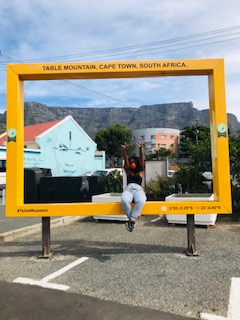

Amanda Okuhle Fono
Which city?

Paris
Paris is a city and Capital of France. Situated in north-central part of the country. Paris is one of the world's most important and attractive cities. It is appreciated for the opportunitied it offers for business and commerce, for study, for culture and for entertainment.Paris is extremely romantic, it has so many places dedicated to romance. Paris has deeply interesting historical and artistic culture.
A Foreign Language with English phrases
The foreign language I would like learn is French language. French is the most widely spoken language worldwide. The ability to speak french is an advantage on the international job market.
| French | English |
|---|---|
| Bonjour, comment vas-tu? | Hello, how are you? |
| Quel age avez-vous? | How old are you? |
| Comment etait votre journee? | How was your day? |
Historical Places in Cape Town
- The Groot Kerk was the first Christian church built in the Cape, soon after the arrival of Jan van Riebeek.
- The Groote Kerk is carvernous inside, it is regarded as one of the most prominent Dutch Reformed churches in the country.
- The church is virtually all timber-wooden organ, and a hugely ornate wooden pulpit with a sculpture of two lions.
Groote Kerk

- Cape Town City Hall is one of our oldest and most central public spaces and home to the Cape Philharmonic Orchestra.
- City Hall was built in 1905 and is a grandiose victorian statement, reminiscent of the French second empire.
- The clock in the turrent is modelled on Big Ben and is exactly half the size, the dials being 10 foot 6 inch in diameter.
City Hall

- The Castle of Good Hope is the oldest colonial building in South Africa, is a pentagonal fortress built by Dutch colonialists in the 17th century
- The Castle of Good Hope operated as the seat of goverment of the DEIC until 1795.
- When the governors relocated, the Castle continued to serve as the political center until the Union of South Africa in 1910.
Castle of Good Hope